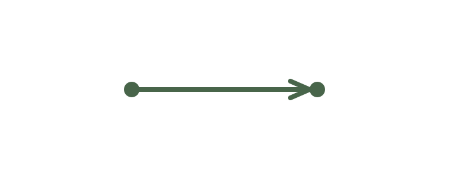

Einführung
So funktioniert der Kurs.
Du vergleichst zuerst Tonhöhen, singst danach einzelne Töne und Melodien nach und wertest deine Ergebnisse aus. So erkennst du, wo du weiterüben kannst.
Es geht nicht darum, schön zu klingen oder Sänger zu werden. Du übst, Noten zu hören und möglichst genau zu treffen. Das nennt man Intonation.
Die Notenhöhe ist eine wichtige musikalische Variable. Eine andere ist die Einteilung der Zeit. Mehr dazu lernst du in den Rhythmuskursen, beginnend mit Rhythmus 1 · Achtelnoten. Weitere Variablen wie Lautstärke und Klangfarbe behandelt der Kurs Musikalische Variablen.
Kapitel 01 · Direkt im Kurs
Höher, tiefer oder gleich?
Vergleiche zwei Töne und erkenne, ob der zweite höher, tiefer oder gleich hoch ist. Mit jeder Übungsstufe werden die Tonhöhenabstände kleiner.

Der Pfeil zeigt die Änderung der Tonhöhe. Es gibt nur drei Richtungen: höher, tiefer oder gleich. Bei einer Veränderung kann der Pfeil – und damit der Notenabstand – kürzer oder länger sein. Bei einem gleichbleibenden Ton gibt es keinen Tonhöhenabstand.
Je kürzer der Pfeil, desto schwieriger ist der Unterschied oft zu hören. Ungeübten Ohren fällt das häufig schon bei einer Terz oder kleineren Abständen schwer.
Übungsstation 1 · Tonpaare vergleichen
Nur auf die Richtung achten.
Höre beide Töne vollständig an und vergleiche sie. Entscheide, ob der zweite Ton höher, tiefer oder gleich hoch ist. Du musst den Abstand noch nicht benennen.
Hörübung · Tonpaare
Station 1 · Große Abstände
Quinte bis Septime. Höre beide Töne und entscheide, ob sich der zweite Ton nach oben, nach unten oder gar nicht bewegt.
Starte ein Tonpaar und entscheide: höher, tiefer oder gleich.
0 von 10 Tonpaaren beantwortet.
Ergebnisse werden auf diesem Gerät gespeichert.
Station 2 · Mittlere Abstände
Terz bis Quinte. Höre beide Töne und entscheide, ob sich der zweite Ton nach oben, nach unten oder gar nicht bewegt.
Starte ein Tonpaar und entscheide: höher, tiefer oder gleich.
0 von 10 Tonpaaren beantwortet.
Ergebnisse werden auf diesem Gerät gespeichert.
Station 3 · Kleine Abstände
Sekunde bis Terz. Höre beide Töne und entscheide, ob sich der zweite Ton nach oben, nach unten oder gar nicht bewegt.
Starte ein Tonpaar und entscheide: höher, tiefer oder gleich.
0 von 10 Tonpaaren beantwortet.
Ergebnisse werden auf diesem Gerät gespeichert.
Arbeite die drei Stationen der Reihe nach durch. Jede Station umfasst zehn Tonpaare. Wenn du in einer Runde mindestens acht richtig hast, gehe zur nächsten Station; andernfalls wiederhole sie.
Kapitel 02 · Töne nachsingen
Töne nachsingen.
Einführung
Hören, nachsingen, überprüfen.
Singe die gehörten Töne möglichst genau nach. Alle Beispiele liegen in einer bequemen Tonlage innerhalb ungefähr einer Oktave. Das Stimmgerät gibt dir eine objektive Rückmeldung darüber, wie genau du die Tonhöhe triffst.
Einzelne Töne singen
Beginne mit einzelnen Zieltönen, bevor du zu Intervallen und Melodien übergehst. Spiele einen Ton ab und singe ihn nach. Das Stimmgerät zeigt dir, ob du zu tief oder zu hoch bist und wie nah du am Ziel liegst.
Höre den Ton und singe ihn nach. Die Anzeige hilft dir, die richtige Tonhöhe zu finden.
Höre zuerst den Zielton.
Noch keine Messung.
Zielton-Treffer werden auf diesem Gerät gespeichert.
Mikrofon aus.
Deine Stimme wird nur in diesem Browser ausgewertet. Es wird keine Aufnahme gespeichert oder hochgeladen. Die Mikrofonfunktion benötigt deine Freigabe und eine sichere Verbindung (HTTPS oder localhost).
So übst du
- Übe zuerst einzelne Töne mit dem Stimmgerät, bevor du mit den Intervallfolgen beginnst.
- Wähle anschließend die einzelnen Töne nacheinander im Stimmgerät aus.
- Höre den Referenzton vor jeder Messung erneut und halte deinen Ton stabil.
- Notiere, wie viele Töne du sicher getroffen hast, und wiederhole die Folge später.
Übungsgruppe
Große Intervalle · Quinte bis Septime
Spiele die Folge ab, höre aufmerksam zu und singe die Töne nach. Prüfe anschließend jeden Ton einzeln mit dem Stimmgerät.
Intervall nachsingen und prüfen
Höre das Tonpaar. Singe zuerst den Grundton und übernimm ihn, danach singe den zweiten Ton und übernimm auch ihn. Das Tool vergleicht den gesungenen Abstand mit dem gesuchten Intervall.
Starte ein Intervall, um zu beginnen.
Mikrofon aus. Die Auswertung erfolgt auf deinem Gerät.
Singe jeden Ton ruhig und einzeln, bevor du ihn übernimmst.
Dein Lernstand wird auf diesem Gerät gespeichert.
Übungsgruppe
Mittlere Intervalle · Terz bis Quinte
Spiele die Folge ab, höre aufmerksam zu und singe die Töne nach. Prüfe anschließend jeden Ton einzeln mit dem Stimmgerät.
Übungsgruppe
Kleine Intervalle · Sekunde bis Terz
Spiele die Folge ab, höre aufmerksam zu und singe die Töne nach. Prüfe anschließend jeden Ton einzeln mit dem Stimmgerät.
Übungsgruppe
Einfache Melodien
Spiele die Folge ab, höre aufmerksam zu und singe die Töne nach. Prüfe anschließend jeden Ton einzeln mit dem Stimmgerät.
Übungsgruppe
Anspruchsvollere Melodien
Spiele die Folge ab, höre aufmerksam zu und singe die Töne nach. Prüfe anschließend jeden Ton einzeln mit dem Stimmgerät.
Auswertung
Wie genau war dein Nachsingen?
Werte nach jeder Übungsgruppe aus, wie viele der drei Folgen du nachsingen konntest und wie oft das Stimmgerät die Tonhöhe als getroffen angezeigt hat. Wiederhole später die Gruppe, bei der du noch unsicher bist.
- Einzeltöne: notiere deine Treffer bei den drei Folgen jeder Gruppe.
- Melodien: bewerte separat, wie sicher du einfache und anspruchsvollere Melodien nachgesungen hast.
- Nutze deine Ergebnisse als Orientierung für deinen Lernweg in Kapitel 3.
Kapitel 03 · Individueller Lernweg
Individueller Lernweg.
Deine Auswertung
Wähle den passenden nächsten Schritt.
Dein sinnvollster nächster Schritt
Deine Auswertung wird aus den gespeicherten Ergebnissen erstellt.
Deine Ergebnisse
| Übungsstufe | Ergebnis | Einschätzung |
|---|
Die Auswertung nutzt Ergebnisse aus diesem Browser. Intervalle und Melodien werden anhand der einzeln übernommenen Töne bewertet.